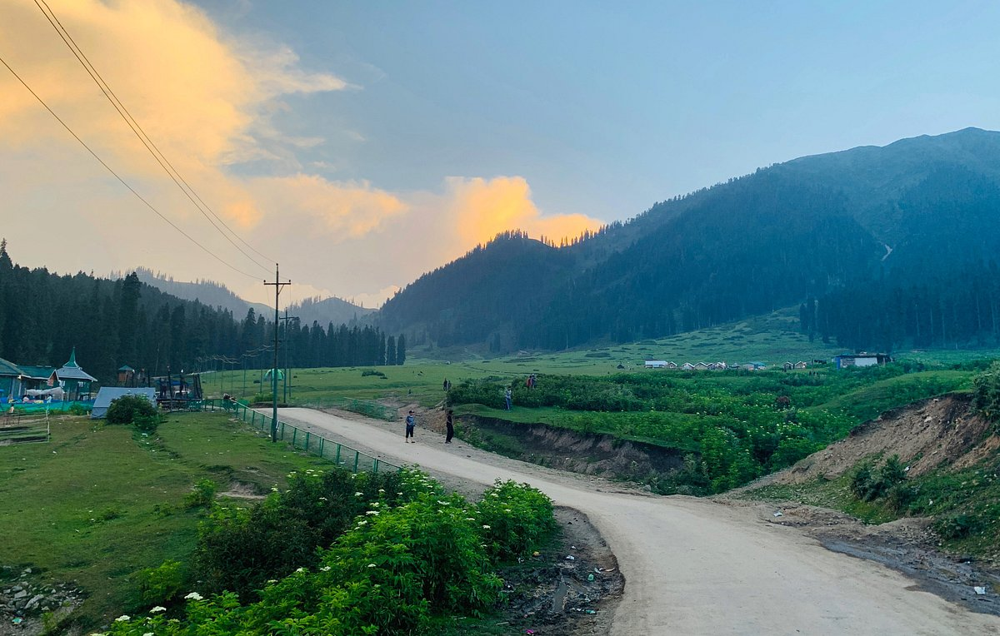

Featured
Oct 12, 2025
Trekking
The Hidden Meadows of Diskhal: A Guide
Most people stop at Doodhpathri. We kept walking upstream for 4 hours. What we found changed our perspective on Budgam forever.
 Zuhaib Rashid
Zuhaib Rashid